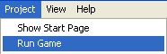

Playing Your Scene
To play your scene from the Scene Editor, click the
Play Scene
icon at the top of the screen
(as shown in Figure 1.1.1)
.
Figure 1.1.1
Or, you can go to the Project menu and select
Run Game
(as shown in Figure 1.1.2)
.

Figure 1.1.2